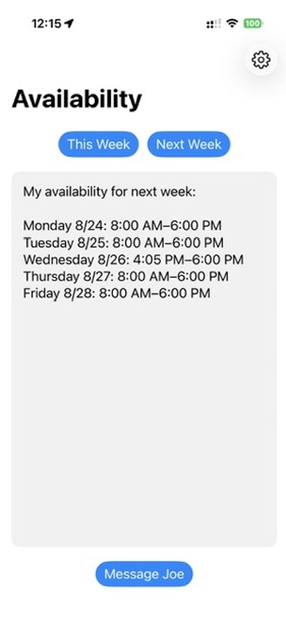

iPhone App
Availability
Turns a busy calendar into a clean list of times I can actually offer someone.
- Checks selected calendars for this week or next week.
- Accounts for travel time around existing appointments.
- Rounds the result into clean, useful times and leaves out insignificant free windows.
- Prepares a Messages draft so the availability can be reviewed before it is sent.
Availability prepares the message for review. Sending can stay manual or be automated if desired.
Learn more →